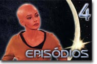

|

Apesar de a Fase II
de Jornada nas Estrelas no ter se transformado em uma srie,
alguns episdios chegaram a ser escritos, na forma de roteiros,
enquanto o projeto ainda era apoiado pela Paramount.
Devido ao carter obscuro dessa parte da histria do franchise,
o que no faltam so boatos. H quem reporte mais de 13 histrias
concludas, mas a "bblia" sobre a produo da Fase
II, redigida por Judith e Garfield Reeves-Stevens (renomados
escritores de livros de referncia de Jornada nas Estrelas),
aponta somente 13 histrias concludas e roteirizadas sobre a
segunda misso de cinco anos de James T. Kirk a bordo da
Enterprise.
Antes desse livro, pouco se sabia dos bastidores da produo. Os
fs viviam base de muitos rumores e bobagens sobre a srie
abortada, inclusive apontando at a existncia de outros episdios
--algumas vezes apenas argumentos no-aproveitados da Srie
Clssica, outras possveis histrias da Fase II
ainda em estudo (no-aprovadas para roteirizao), e at o
roteiro original de Roddenberry para um filme de Jornada nas
Estrelas, "The God Thing".
Entretanto, aprovados para Fase II so apenas 13 --
justamente a encomenda feita inicialmente pela Paramount para a srie
(s se o programa fosse um sucesso o estdio encomendaria a
produo do resto da temporada). Desses, dois foram aproveitados
em A Nova Gerao.
Para a elaborao das trs primeiras partes desse material
sobre a Fase II, o Trek Brasilis utilizou como base
o material escrito pelo casal Reeves-Stevens, autores do livro
"Star Trek Phase II: The Lost Series", e para a confeco
do guia de episdios utilizamos o material escrito por Mark
Altman e Edward Gross, dois dos mais respeitados experts em Jornada
nas Estrelas nos Estados Unidos.
Episdios
01
- In Thy Image
02 - The Child
03 - The Savage Syndrome
04 - Practice in Walking
05 - To Attain the All
06 - The Prisoner
07 - Tomorrow and the Stars
08 - Devil's Due
09 - Deadlock
10 - Lord Bobby's Obsession
11 - Are Unheard Melodies Sweet?
12 - Kitumba, Part I
13 - Kitumba, Part II
|